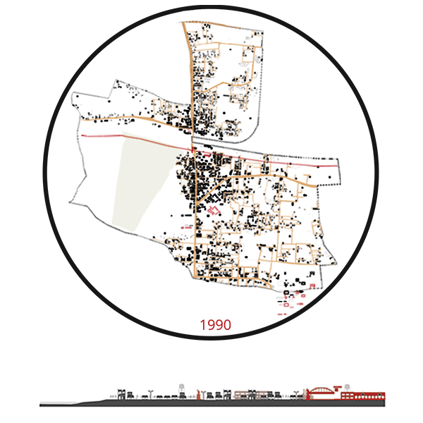

Katpadi was an agricultural based village. Vellore - Chittoor land route cuts right through Katpadi, acting as the major catalyst. British Raj established the rail route and Katpadi station right at the junction.
1960
By the year 1960, Katpadi as a settlement grew denser around the Junction. The Vellore - Chittoor route with the Railway junction attracted more trade and commerce. Religious settlements grew with religious institutions at their core.

1990
Commercial and Industrial growth served as a precursor to planned residential exapansion. Various Educational establishment started becoming the Catalyst. The development started growing along the primary road.

2000
Institutional and educational buildings in and around Katpadi became famous. Vellore - Chittoor route became a crucial highway to bear the crowd inflow. Unplanned residential growth increased on the eastern side of the primary route.

2010
The nearby amenities like CMC and VIT started pulling people from across India. Multiple educational institutions started growing around Katpadi because of the potential. Plot value started becoming costlier as the need increased.
2019
The Institutions started gaining international recognition, bringing more inflow of people. The Vellore-Chittoor Highway started pulling more commercial establishments around.The settlement has grown around the major road networks and towards various institutions.

Gallery


{kind=link}
{kind=link}
{kind=link}
{kind=link}
{kind=link}
{kind=link}